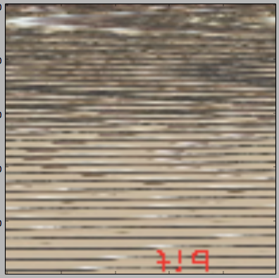
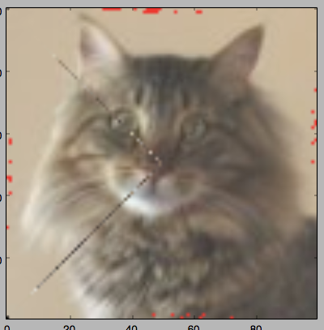

pythonchallenge
游戏入口 http://www.pythonchallenge.com/
挺好玩的解密小游戏，会上瘾
第零关
Hint: try to change the URL address.
1 | 2**38 = 274877906944 |
1 | http://www.pythonchallenge.com/pc/def/274877906944.html |
第一关
everybody thinks twice before solving this.
g fmnc wms bgblr rpylqjyrc gr zw fylb. rfyrq ufyr amknsrcpq ypc dmp. bmgle gr gl zw fylb gq glcddgagclr ylb rfyr’q ufw rfgq rcvr gq qm jmle. sqgle qrpgle.kyicrpylq() gq pcamkkclbcb. lmu ynnjw ml rfc spj.
看图：每个字符ASCII+21
2
3
4
5
6
7
8>>> for i in list(s):
... if ord(i)>=97 and ord(i)<=122:
... i = chr(ord(i)+2)
... if ord(i)>122:
... i = chr(97+(ord(i)-122))
... ans += i
...
"i hope you didnt translate it by hand. thats what computers are for. doing it in by hand is inefficient and that's why this text is so long. using string.maketrans() is recommended. now apply on the url."
查了string.maketrans()用法后(人工也成)把url中的map -> orc 就行了1
2
3
4
5
6
7
8>from string import maketrans
>ori = "g fmnc wms bgblr rpylqjyrc gr zw fylb. rfyrq ufyr amknsrcpq ypc dmp. bmgle gr gl zw fylb gq glcddgagclr ylb rfyr'q ufw rfgq rcvr gq qm jmle. sqgle qrpgle.kyicrpylq() gq pcamkkclbcb. lmu ynnjw ml rfc spj."
>aft = "i hope you didnt translate it by hand. thats what computers are for. doing it in by hand is inefficient and that's why this text is so long. using string.maketrans() is recommended. now apply on the url."
> transtab = maketrans(ori,aft)
> url.translate(transtab)
'httr://yyy.rathopehcnngpig.eoo/re/fgh/ocr.hton'
#so:url = http://www.pythonchallenge.com/pc/def/ocr.html
第二关
recognize the characters. maybe they are in the book,
but MAYBE they are in the page source.
是要看页面的源码!?。。
源码中找到了：1
2
3
4
5
6
7
8
9
10
11
12
13
14
15
16
17
18
19
20
21
22
23
24
25
26
27
28
29
30
31
32
33
34
35
36
37
38
39
40
41<!--
find rare characters in the mess below:
-->
....
#很长，count()后发现有几个是字母。先复制给参数html
for i in html:
... se.add(i)
...
>>> se
set(['!', '#', '%', '$', '&', ')', '(', '+', '*', '@', '[', ']', '_', '^', 'a', 'e', 'i', 'l', 'q', 'u', 't', 'y', '{', '}'])
>>> for i in list(se):
... print i,html.count(i)
...
! 6079
# 6115
% 6104
$ 6046
& 6043
) 6186
( 6154
+ 6066
* 6034
@ 6157
[ 6108
] 6152
_ 6112
^ 6030
a 1
e 1
i 1
l 1
q 1
u 1
t 1
y 1
{ 6046
} 6105
#字母都是1，这也验证了Hit
其实知道是字母了直接re.findall('[a-z]',html)就成。题的真实用意？
#so:http://www.pythonchallenge.com/pc/def/equality.html
第三关
One small letter, surrounded by EXACTLY three big bodyguards on each of its sides.
2
3
4
5
6
import requests
for i in ans:
r = requests.get('http://www.pythonchallenge.com/pc/def/{}.html'.format(i))
print r.content
...
到 l 时候：yes. but there are more.
试到y时候：It really looks like a Y, isn't it? now, go back.
好吧。。还是看页面源码去吧 : ) 开始以为是要处理字符串abc...z
和题2类似直接正则1
2
3
4
5
6
7
8
9ans = re.findall('[a-z][A-Z]{3}([a-z])[A-Z]{3}[a-z]',html)
>>> for i in ans:
... a+=i
...
>>> a
'linkedlist'
#so:http://www.pythonchallenge.com/pc/def/linkedlist.html
#then 他有提示...
#so:http://www.pythonchallenge.com/pc/def/linkedlist.php
第四关：只有图..
只能将源码中的这句话作为Hit：
urllib may help. DON’T TRY ALL NOTHINGS, since it will never end.
400 times is more than enough.
在一家大数据公司实习一个月了：所以看页面源码还是能看懂的✧(≖ ◡ ≖✿)嘿嘿
发现了href="linkedlist.php?nothing=12345" 和源码中的NOTHING正好对应那就访问呗。。他让用urllib，我习惯用requests..
1 |
|
跑到and the next nothing is 16044出了问题：Yes. Divide by two and keep going.
人工改下接着跑呗 ：）…
好吧他真是怕你寂寞才设置这么多问题…1
2
3
4
There maybe misleading numbers in the
text. One example is 82683. Look only for the next nothing and the next nothing is 63579
1 | #66831出了结果 |
第五关：
pronounce it
source page: peak hell sounds familiar ?
英语一般很吃力啊，还发音？匹克好？皮卡哦？
…去看文档https://docs.python.org/2/library/index.html
peak搜无果pick搜搜倒有点意思了。。
1 |
|
不对，又是忽略了什么。。1
2
3
4
5
6<peakhell src="banner.p">
<!-- peak hell sounds familiar ? -->
</peakhell>
#忽略了http://www.pythonchallenge.com/pc/def/banner.p
#mmp,loads后还是不知所措 :)
#似乎要排个序输出？不对，，每个小列表中的元组个数不一。。
随手写代码试试。。。1
2
3
4
5
6
7> final = ''
> for i in data:
... for ii in i:
... for iii in range(ii[1]):
... final+=ii[0]
...
> final
十分有趣✧(≖ ◡ ≖✿)嘿嘿1
#so:http://www.pythonchallenge.com/pc/def/channel.html
第六关：
以后要把源码都分析好在往下分析。。
!– <-- zip -->
now there are pairs!– The following has nothing to do with the riddle itself. I just
thought it would be the right point to offer you to donate to the
Python Challenge project. Any amount will be greatly appreciated.
-thesamet
–>
！ - 以下与谜语本身无关。 我只是给你捐赠的正确点
—————————————————–mmp
信息不足。。看看cookie:
info: you+should+have+followed+busynothing…
没用，，只好想想zip和图片了
十分有趣✧(≖ ◡ ≖✿)嘿http://www.pythonchallenge.com/pc/def/channel.zip
查了查要打开.zip用到 zipfile（人工点开也成。。）
1 | class zipfile.ZipFile(file[, mode[, compression[, allowZip64]]]) |
1 | def process_num_6(): |
1 | #so:http://www.pythonchallenge.com/pc/def/oxygen.html |
第七关：
这次真的只有图片了。。。.png的图片
google了‘python怎么读写png图片中隐藏数据’
出现了连接类似这样的‘python读取图片中B通道隐藏数据’
所以解题方向应该就是这个了
1 |
|
✧(≖ ◡ ≖✿)嘿嘿，图像处理挺有意思1
#so:http://www.pythonchallenge.com/pc/def/integrity.html
第八关：
Where is the missing link?
图中蜜蜂有鬼。。。有密码。。
1 | un: 'BZh91AY&SYA\xaf\x82\r\x00\x00\x01\x01\x80\x02\xc0\x02\x00 \x00!\x9ah3M\x07<]\xc9\x14\xe1BA\x06\xbe\x084' |
编码问题？查了很多资料。。。
1 | #https://docs.python.org/2/library/bz2.html?highlight=bz2#module-bz2 |
1 | #so:http://www.pythonchallenge.com/pc/return/good.html |
第九关：connect the dots
好多图像处理，先学一波：
1 | http://pillow.readthedocs.io/en/3.4.x/reference/Image.html |
连接点画图，first,second应该是坐标。。
用到的方法：1
2
1 | def process_num_9(): |
1 | so:http://www.pythonchallenge.com/pc/return/bull.html |
第十关：what are you looking at?
先找clue
href=”sequence.txt”
len(a[30]) = ?
1 | #http://www.pythonchallenge.com/pc/return/sequence.txt |
看起来很简单？！
1 | 把2拆了： |
1 | #根据wiki上外观数列的性质 |
1 | so:http://www.pythonchallenge.com/pc/return/5808.html |
第十一关：odd even
这模糊的感觉，难道又是图像处理？
线索很少
odd even 奇偶
cave 洞穴
通过把奇数，偶数把坐标分成两份分别生成图像，结果一片黑，还是对图像处理不是特别理解。
多次尝试。。。
正确的如下：1
2
3
4
5
6
7
8
9
10
11
12def process_num_11():
from PIL import Image, ImageDraw
im = Image.open( 'cave.jpg' )
im1 = Image.new("RGB", (640, 480))
pixdata = im.load()
for i in xrange(640):
for j in xrange(480):
if (i+j) %2== 0:
im1.putpixel((i,j),pixdata[i,j])
else:
im1.putpixel((i,j),0)
im1.show()
1 | #so:http://www.pythonchallenge.com/pc/return/evil.html |
第十二关：dealing evil
处理恶魔？
又是图像问题，满满的都是恶意
似乎这个游戏几乎图像问题。
hah…既然有evil1那么就有evil2，3，4…就2有用。
1 | #not jpg - gfx |
可是还是不会，，第一次听说.gfx文件
note:实习生活告一段落，开始玩游戏。
1 | google: What is a GFX file? |
1 | 直接打开文件试试吧 |
1 | dis pro port ...我这边就显示上面一半 ity(被划掉了)，算了去google翻译吧 Did you mean: disproportionate ,试了又试 |
第十三关：call him
phone that evil
看到这，瞬间想到12关的那个Bert is evil! go back!
不会这么容易吧。。。2378不对。。
难道国外电话要加#号？试了下加前面有用，#2378
1 | don't look here |
1 | 剩下就这一个线索了，还打不开。。 |
1 | >import xmlrpclib |
第十四关：walk around
1 | 应该是处理大便下面那个图片吧，O__O …那是面包。 |
1 | 下面才是正题--处理图像 |
展示的图像。bit?什么鬼。

1 | 试了一下 |

不过能看清是只猫，其他都是细节✧(≖ ◡ ≖✿)嘿嘿
1 | #so:http://www.pythonchallenge.com/pc/return/cat.html |